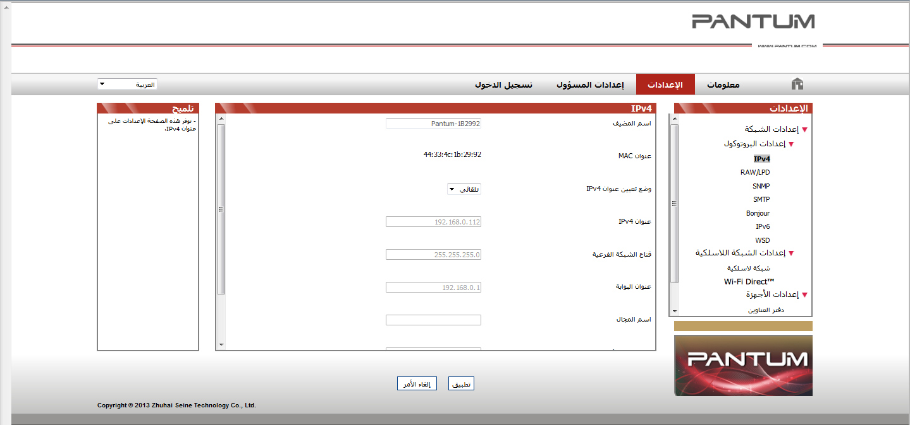

4. إعدادات الشبكة السلكية (لطُرز طابعة الشبكة السلكية)
قد تحتاج إلى تعيين بعض معلمات الشبكة للطابعة. يمكن تعيين هذه المعلمات من خادم الويب المضمن.
4.1. تعيين عنوان IP
يمكن الحصول على عنوان IP للطابعة تلقائيًا من خلال وظيفة DHCP أو تعيينه يدويًا.
| تعيين تلقائي
تم تمكين الوظيفة DHCP للتعيين التلقائي بالطابعة افتراضيًا.
1. وصّل الطابعة بالشبكة عبر كبل الشبكة وقم بإكمال عمل التجهيز لبدء التشغيل.
2. ستحصل الطابعة على عنوان IP المعين بواسطة الخادم تلقائيًا. يمكن استخدام عنوان IP الذي تم الحصول عليه تلقائيًا بعد دقائق قليلة.
 |
ملاحظة: |
• إذا لم يتمكن DHCP من الحصول على عنوان IP تلقائيًا، فستستخدم الطابعة عنوان IP الافتراضي تلقائيًا: 169.254.xx.xx. • بسبب ميزات DHCP، فقد يختلف عنوان IP للطابعة المعين تلقائيًا بواسطة الشبكة في حالة عدم استخدام الطابعة لفترة طويلة أو في حالة تغيير نقطة وصول الشبكة، والتي قد ينتج عنها اتصال غير ناجح بالطابعة. لذا، يوصى بربط عنوان IP المعين تلقائيًا بواسطة الشبكة بعنوان Mac الخاص بالطابعة عند تمكين الوظيفة DHCP. |
| تعيين يدوي
اكتب عنوان IP في شريط عنوان متصفح الويب لفتح خادم الويب المضمن.
1. انقر فوق الإعدادات في شريط التنقل لفتح صفحة "الإعدادات"؛
2. حدد إعدادات الشبكة - إعدادات IPV4؛
3. قم بتعيين وضع تعيين عنوان IP (يدوي) وعنوان IP وقناع الشبكة الفرعية. العناصر الأخرى اختيارية؛
4. انقر فوق "تطبيق" لحفظ الإعدادات.
|
|
ملاحظة: |
• يمكنك استخدام خادم الويب المضمن لتغيير وضع تعيين عنوان IP إلى تلقائي أو يدوي. |
4.2. تثبيت الطابعة على الشبكة
في هذا الإعداد، يتم توصيل الطابعة بالشبكة مباشرةً ويمكن تعيينها لتسمح لجميع أجهزة الكمبيوتر الموجودة على الشبكة بالطباعة من الطابعة مباشرةً.
1. قبل بدء الطباعة، وصّل أولاً كبل الشبكة بمنفذ الشبكة الخاص بالطابعة إنشاء اتصال مباشر بالشبكة.
2. شغّل الطابعة وانتظر حتى يعرض مؤشر الحالة الموجود على لوحة التحكم الحالة "جاهزة"، كما هو موضح أدناه.

3. أدخل القرص المضغوط للطابعة في الكمبيوتر. إذا لم يبدأ برنامج التثبيت، يرجى استعراض ملف "setup.exe" الموجود على القرص المضغوط ثم انقر نقرًا مزدوجًا لتشغيل الملف.
4. اتبع إرشادات التشغيل الخاصة ببرنامج التثبيت.
5. قم بالمتابعة لإكمال عملية التثبيت.
|
|
ملاحظة: |
• عندما يطالبك برنامج التثبيت بتحديد طابعة، يمكنك تحديد اسم الطابعة المناسب من قائمة "الطابعات المكتشفة"؛ • إذا لم يظهر اسم الطابعة في قائمة "الطابعات المكتشفة"، فيرجى النقر فوق "تحديث" والبحث عن الطابعات على الشبكة؛ • إذا كنت تعرف عنوان IP للطابعة المراد توصيلها، فيمكنك تحديد "حدد عنوان IP للتثبيت" لإدخال عنوان IP الخاص بالطابعة لتثبيتها. |
4.3. تعيين منتجات الشبكة
4.3.1. عرض إعدادات الشبكة أو تغييرها
يمكنك استخدام خادم الويب المضمن لعرض إعدادات IP أو تغييرها.
1. قم بالضغط لفترة طويلة على الزر "إلغاء/متابعة" بلوحة التحكم لطباعة صفحة معلومات Demo، ثم اعرض عنوان IP الخاص بالطابعة. يمكن طباعة صفحة Demo من خلال الضغط لفترة طويلة على الزر بلوحة التحكم (كما هو موضح في الشكل أدناه) في حالة الخمول.
2. اكتب عنوان IP في شريط عنوان مستعرض الويب للوصول إلى خادم الويب المضمن.
3. انقر فوق علامة التبويب "إعدادات" للحصول على معلومات عن الشبكة. غيّر الإعدادات حسب الحاجة.

4.3.2. تعيين كلمة مرور تسجيل الدخول لخادم الويب أو تغييرها
استخدم خادم الويب المضمن لتعيين كلمة مرور الشبكة أو تغيير كلمة المرور الحالية.
|
|
ملاحظة: |
• اسم المستخدم الافتراضي هو "admin" وكلمة المرور الأولية هي "000000". |
1. لفتح خادم الويب المضمن، يرجى تسجيل الدخول أولاً.
2. انقر فوق علامة التبويب "إعدادات المسؤول".
3. اكتب كلمة المرور الجديدة في مربع كلمة المرور ومربع تأكيد كلمة المرور.
4. انقر فوق الزر "تطبيق" في أسفل النافذة لحفظ الإعدادات.
4.3.3. استعادة إعدادات المصنع
إذا كنت تريد إعادة تعيين جميع إعدادات معلمات الطابعة، فيمكنك استعادة إعدادات المصنع بواسطة الضغط لفترة طويلة على الزر "إلغاء/متابعة" عند إيقاف تشغيل الطابعة لتشغيلها والانتظار لمدة 10 ثوان حتى تدخل الطابعة في الحالة "جاهزة" لإنهاء عملية إعادة التعيين.